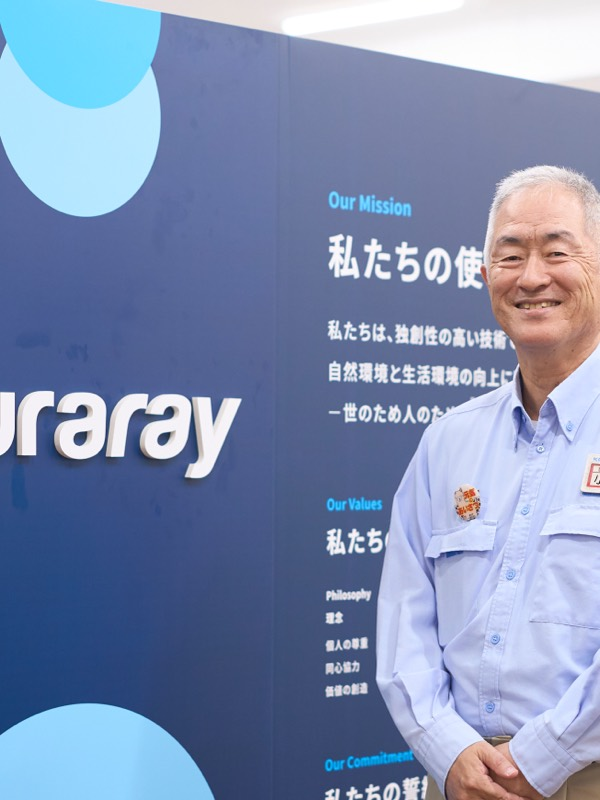
独自技術で世界を支え、地域と共に歩む
小橋 俊文toshifumi kobashi
株式会社クラレ 倉敷事業所長
1988年京都大学大学院修了後、株式会社クラレに入社。鹿島事業所での勤務やアメリカへの海外駐在を経て、独自技術製品の新プラント建設プロジェクトなどを牽引。2022年より、同社発祥の地である倉敷事業所の事業所長を務める。地域との共生と、社員の働きがい向上に尽力している。
企業サイトを見るCHAPTER 01
創立から100年、独自の化学技術で世界を支える製品を創出
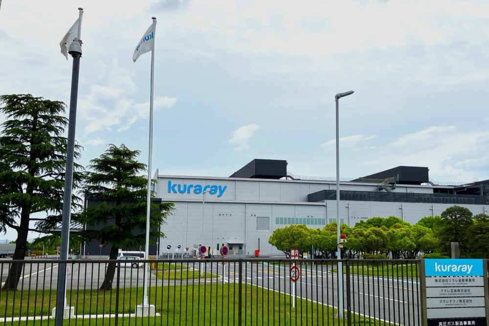
Q今年で創立100周年を迎えられるそうですが、クラレの歩みについて教えてください。
A当社は1926年、当時の先端技術であった人造絹糸「レーヨン」の事業化を目的に、岡山県倉敷市に創立されました。当社の社名である「クラレ」も当時の「倉敷レイヨン」という社名が由来となっています。その後、戦後間もない1950年には国産初の合成繊維である「ビニロン」の工業化に成功しました。当時の社長であった大原總一郎の「日本の産業を復興する」という強い使命感のもと、品質追求のために原料からの「一貫生産」にこだわり抜いた大きな挑戦でした。この繊維で培った高分子化学・合成化学の技術を強みに、その後は化学分野へと事業領域を拡大し、現在のスペシャリティ化学メーカーへと発展を遂げました。現在では、売上高の8割以上を化学関連の事業が占めるようになっています。
Q私たちの身の回りでは、どのようなクラレの製品が使われているのでしょうか。
A日常生活の非常に身近なところで、世界トップシェアを誇る独自の製品が数多く使われています。例えば、テレビやスマートフォンの液晶ディスプレイの表示に欠かせない「光学用ポバールフィルム」は当社の主力製品です。また、天然皮革の代替として開発され、ランドセルなどに広く使われている人工皮革の「クラリーノ」も有名です。さらに、高いガスバリア性を持つEVOH樹脂「エバール」は、マヨネーズのボトルやかつお節のパックといった食品包装用のフィルムとして世界中で使用されています。エバールは食品を長持ちさせることで食品ロス削減、つまりSDGsの達成にも大きく貢献しています。一般の消費者の方が直接購入することはありませんが、実は皆さまの非常に身近なところで持続可能な社会の実現を支えています。
CHAPTER 02
他社が追随できない優位性と、粘り強い研究開発のDNA
Qスペシャリティ化学メーカーとしてのクラレならではの強みや優位性はどこにありますか。
A当社の最大の強みは「自然界にある優れた素材を化学の力で代替する独自の技術」と「原料からの一貫生産」という二つのこだわりにあります。独自技術から生まれた世界トップシェア製品が売上の6割以上を占めており、なかでも原料段階から自社で一貫して生産・開発する事業では、技術の蓄積と応用の幅が生まれ、他社が容易に真似することはできません。目先の利益だけにとらわれず地道に技術を磨き上げる粘り強さこそがクラレの最大の優位性です。
Q革新的な製品を継続して生み出すために、どのような開発姿勢や工夫をされているのでしょうか。
A化学の世界において新しい事業が一つ立ち上がるまでには十数年にわたることも珍しくありません。その長い期間、他の事業でしっかりと利益を上げ、次の研究開発に向けて継続的に資金を投入するための収益基盤の構築が不可欠です。当社には、かつて無謀と言われた大投資を乗り越えてビニロンを成功させた歴史があり、その「あきらめずにやり抜く執念」のDNAが今も受け継がれています。また、自分たちの製品が社会のどこで役に立っているのか、社員一人ひとりが実感することも重視しています。BtoBの製品が多いため、販売や開発の担当者を呼んで、工場で働く社員に製品の社会的価値を説明してもらう機会を意識して増やしています。自分たちの仕事が世の中に貢献していると気づくことが、働く誇りや生きがい、あるいは日々の働きがいにつながると考えています。
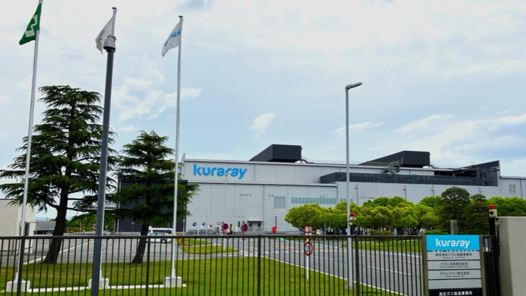
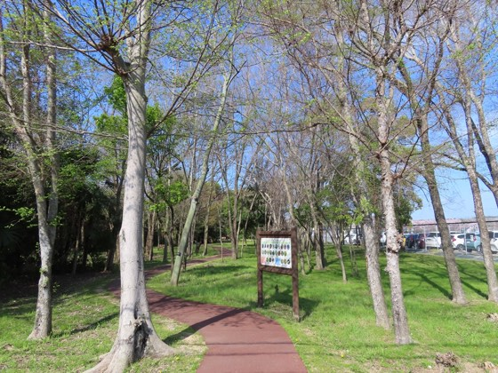
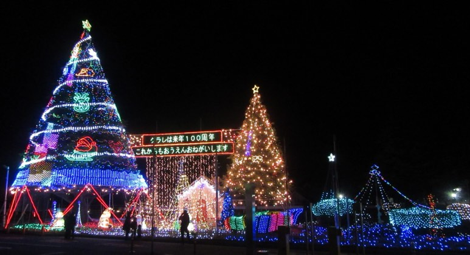
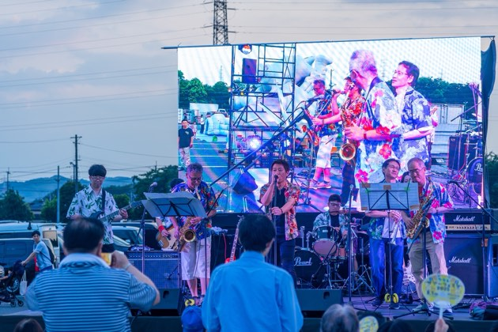
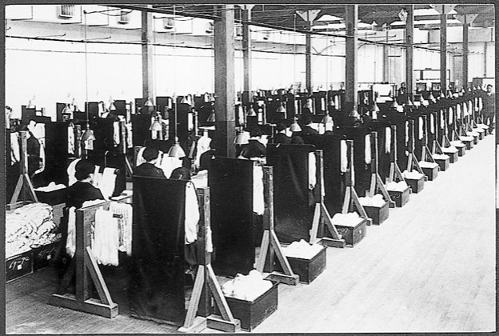
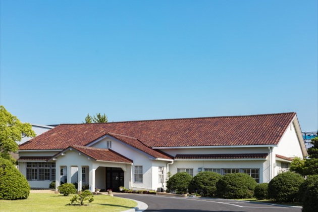
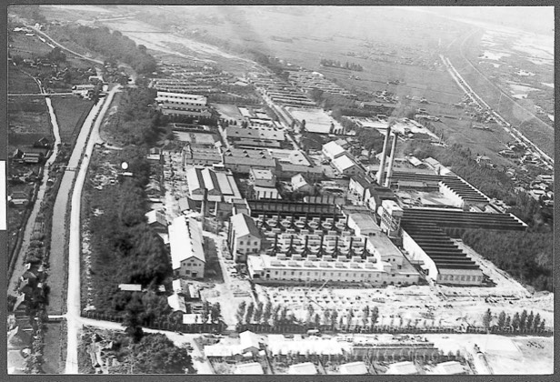
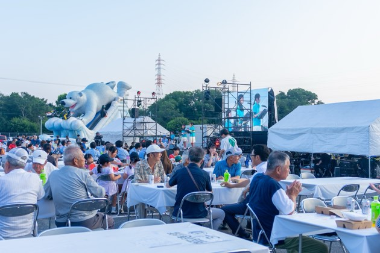
CHAPTER 03
発祥の地・倉敷への想いと、挑戦を支える仕事の流儀
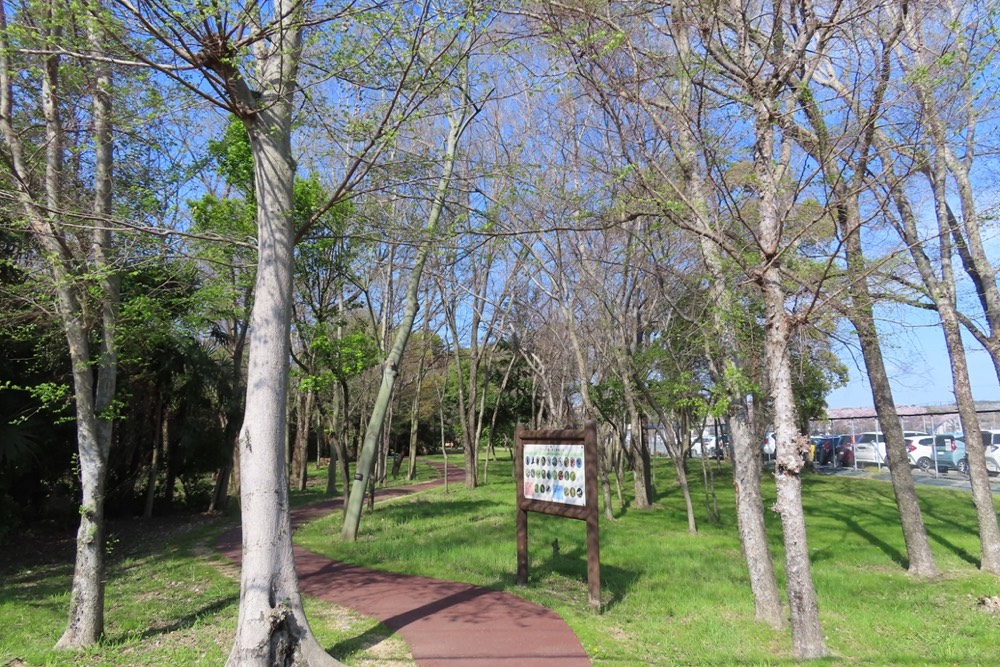
Qクラレにとって発祥の地である「岡山・倉敷」はどのような存在ですか。地域との関わりについても教えてください。
A倉敷は当社の根幹であり、創業期からの「大原イズム」が今も深く息づいている場所です。創業者らは「社会から得た財はすべて社会に返す」という信念のもと、大原美術館や倉敷中央病院などを設立し、地域の医療・文化に多大な貢献をしてきました。そのために地域住民の方々のクラレに対する信頼と期待は非常に高く、私たちは常に地域との共生を大切にしています。倉敷事業所では35年以上前からクリスマスシーズンに「クリスマスファンタジー」というイルミネーションを行っています。これはもともと社員が「自社のポリエステル綿を飾りに使いたい」と自発的に始めたものが伝統として定着したものです。また、夏には地域の方々を招いて「サマーフェスタ」を開催しているほか、敷地内の緑地「小鳥の森」の保全など、地域と調和した活動を続けています。
Q100周年を通過点として、今後はどのような目標を掲げて会社を発展させていきたいですか。
A私たちは、従業員の安全を企業活動の原点とし「安全はすべての礎」という行動原則を最も大切にしています。人を傷つけない安全な環境を維持した上で、次の 100 年に向けて「挑戦」を続け、新しい価値を生み出す人材を育成していきます。現在、倉敷事業所ではディスプレイの大型化に対応した高品質な光学用ポバールフィルムの生産強化に注力しています。さらにクラレグループ全体では、環境負荷を低減するPFAS除去用の活性炭や、生活の質を向上させる歯科材料、細胞培養時の足場材料となるPVA マイクロキャリアの「スキャポバ」など、環境・健康・先端医療分野への展開を一層強めていきます。過去の成功と失敗の歴史から真摯に学び、社会課題を解決する製品を提供し続けることで、豊かな未来に貢献していきたいと考えています。